四十九堂/千葉県
最初の出会いは全くの偶然だった。
千葉の片田舎をドライブしていたら偶々お墓の入り口に不穏な紙切れが風にたなびいていたのを見つけたのだ。
それは香取市の吉祥院というお寺だった。
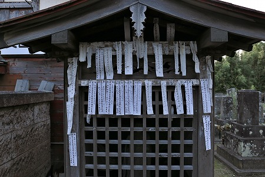
何かと思い車を停め、近づいてみると戒名が書かれた紙がびっしりと貼り付けてあるではないか！
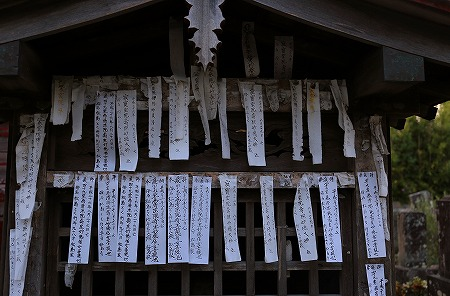
夕暮れ、大勢の戒名が並んでいる。その無言の迫力に圧倒された。
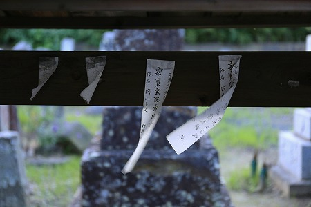
一体、これは何なのだろう？
帰ってから調べてみると、どうも千葉県の北東部、匝瑳市や香取市、旭市周辺で行われている追善供養の習俗らしい。
紙には戒名の他に四十九堂と書かれている。
一般的なフォーマットは
奉
納
四
十
九
堂
為
戒
名
新
盆
菩
提
也
…とある。
これは亡くなった人への追善供養で、新仏が出ると、新盆までに周辺の四十九ヶ所のお寺やお堂に亡くなった人の戒名が記された札を貼り付けてまわるという習俗なのだという。
そんな四十九堂巡り習俗の痕跡を求めて再び千葉に赴いた。
最初に向かったのは匝瑳市富岡にある薬王寺、18世紀に開かれた寺だ。
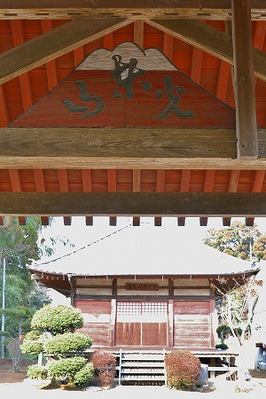
山門に山の形の額があった。
正面に書かれている「東光山」というのはこの寺の山号だ。
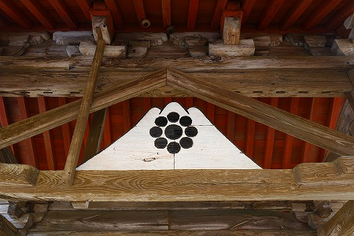
で、裏側。
九曜の紋が描かれている。
九曜は千葉氏の紋だが、この寺と千葉氏が関係あるのかというと…良く判んないです。
それ以上に今回のミッションとはまるで関係なく、のっけから脱線してしまい、遺憾の意を表明させていただきます…。
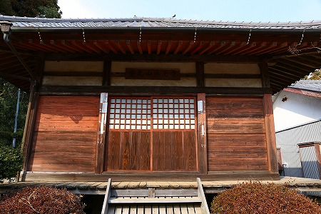
で、門の先にある薬師堂の扉の左右に数枚の紙が貼ってある。
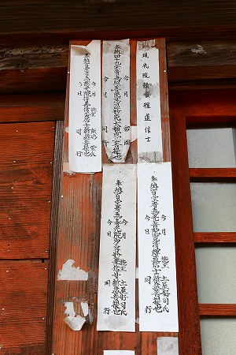
おお、四十九堂の紙ではないか！
お墓参りに来ていた方に話を伺ったのだが、偶々その方の身内が去年お亡くなりになり、まさにこの間やったばかりだったとか。
昔からしきたりでやらなければならないのは判っていたけど、やっぱり面倒だ、というような話をされていた。
それでも私はやり切りましたけど！的なプライドもちらほら。ご苦労様です…。
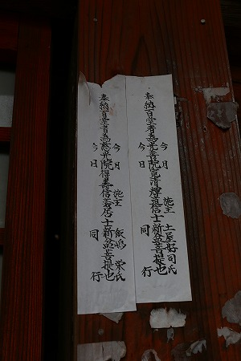
右側には奉納百堂と書かれた紙もあった！
えええ！四十九堂だけじゃなくて百堂巡るエキストリームコースもあるのぉ？
近所の寺にも寄ってみたが、本堂前の掲示板のようなものがあった。
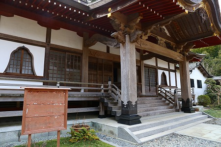
もしかしたらここに四十九堂参りの札が貼られたたりしたんだろうか？
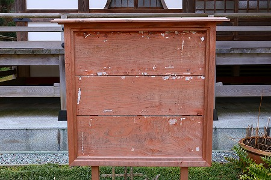
よ〜く見ると…
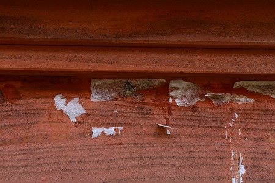
あ、奉納の「奉」の字がかすかに見える。
ここも四十九堂巡りのうちの一か所なのだ。
ただし何らかの事情で全部剥がされてしまっているのだ。
「もう、本堂建て替えたんだからウチのお寺には四十九堂の紙は貼らないでください！」
…ということなのだろうか？
山形の最上三十三観音を訪れた際にも、巡礼札を建物にではなく掲示板に貼らせるお寺を見たことがある。
大抵は新築の本堂で、気持ちはわかるが、何となく味気ない感は否めない。
いや、仕方ないですけどね。
次に訪れたのは旭市の龍福寺。
立派な仁王門が印象的な寺だった。
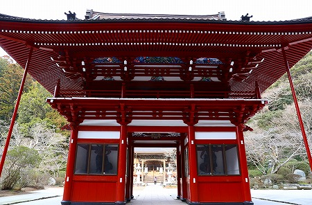
門を潜ると比較的新しい本堂が見えてくる。
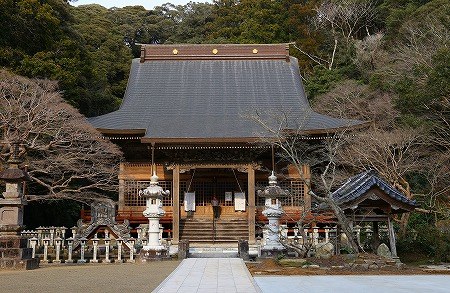
その扉にはびっしりと札が貼られていた。
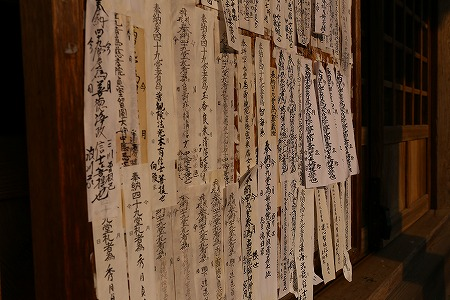
逆サイドにもびっしり。
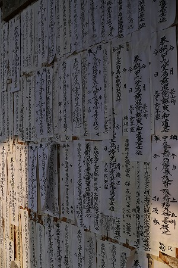
おお〜。このモリモリしたのが見たかったのですよ〜！
これまで見てきた中でも群を抜いて貼り紙の数が多い。
しかも結構新しそうな貼り紙ばかり。
うむ〜、コレは凄い！
ここに至って二つの事に気が付いた。
その1；この習俗は一部の人達の間だけひっそり行われているものではなく、この地域のかなりの人々が行っている習俗であるということが判る。だって凄い数だもの。
その2；お寺やお堂ごとに奉納する貼り紙の数にばらつきがある、ということは「四十九堂」というのは特定の49か所のお寺、という訳ではなくて奉納者の住んでいる地域などによって49か所のお堂のチョイスは変わってくるのだろう。
この寺にだけにこれだけ貼り紙が集中するということは、旭市のみならず近隣の匝瑳市や香取市などからも奉納に訪れているのだろう。
逆に貼り紙が少ないお寺やお堂はごく近所の人しか行かない、という事だ。
なんとなく、ぼんやりだが謎だらけのこの習俗のアウトラインのようなモノが見えてきた。
新仏を出した家の遺族はお盆までの間にあちこちのお堂やお寺に戒名の書かれた紙を貼りに行く。
大抵は近所の小さなお堂や地元のお寺などだろう。
でも、少し離れたお寺でも地域では比較的有名な寺院などがあれば、そこまで出向いていって紙を貼って来る。
そうして49枚の紙を使い切るまであちこちのお寺やお堂を巡る。
…という感じだと思うのだが、いかんせん聞き取りがあまりできてないので、実際四十九堂巡りをされた方、いらっしゃったら是非お話を聞かせてくださいませ！！！
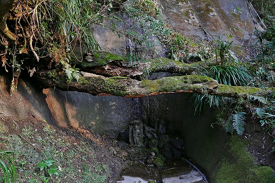
龍福寺は大きなお寺で境内には小さな滝などもある。
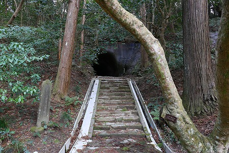
そして境内の片隅には手掘りトンネルがあるじゃないか！
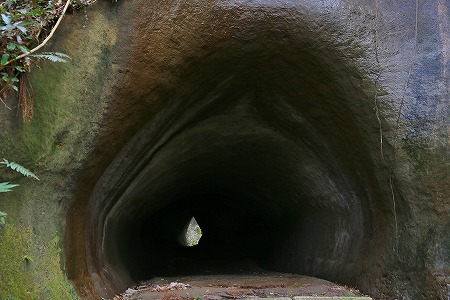
手掘りトンネル好きとしては若干興奮気味に進んでいきますとも！
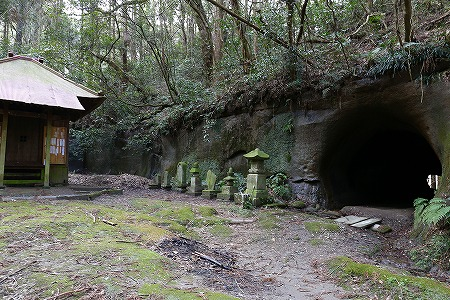
で、トンネルを抜けるとそこには小さなお堂があった。
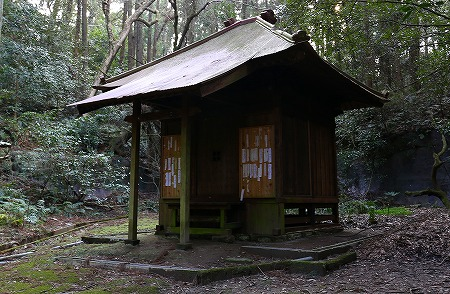
奥の院、という事になるのだろう。
そこにも四十九堂の紙が貼られていた。
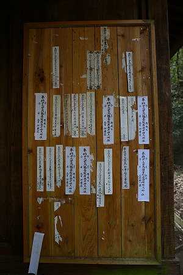
こうしてみると、貼り紙の大きさやフォーマットもまちまちだ。
この紙はお寺で発行するのだろうが、お寺がそれぞれ独自規格を持っているのでこのような眺めになるのだろう。
トンネルあり、仁王様あり、滝あり、と盛りだくさんのお寺だった。
次に訪れたのは東庄町の延命寺。
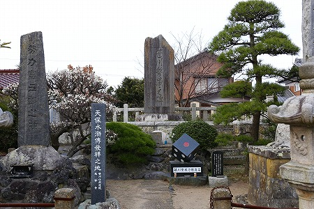
大衆演劇の演目でお馴染み、天保水滸伝に所縁のある寺だ。
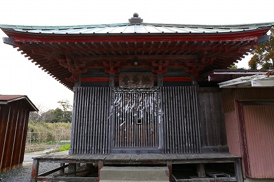
地蔵堂に幾つかの紙が貼られていた。
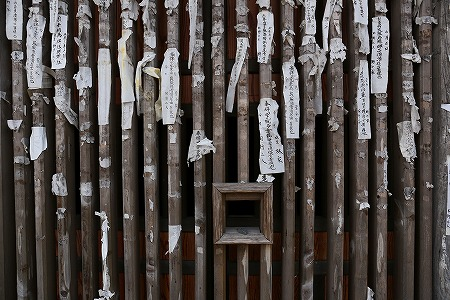
この地蔵堂は前面が縦格子で覆われている、チョット珍しい形式のお堂だが、その縦格子にびっしりと紙が貼られている。
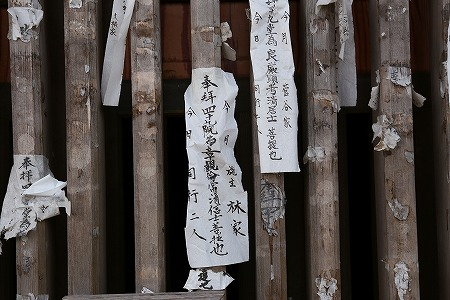
自然に剥がれたものなのか剥がされたものなのか判別できないが、数多くの貼り紙の痕跡が見られる。
また四十九院、と書かれた紙もあった。そう呼ぶ地域もあるのだろう。
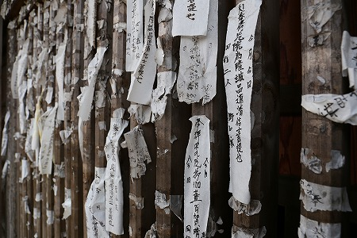
それにしても不思議な習俗だ。
一体何でこんな煩雑な手続きを取らなければならないのだろう？
単純に考えれば、遺族が亡くなった人に成り代わって地域の神仏にご挨拶に伺う、という意味合いなのだろう。
しかし私はもう一つ別の意味があるように思えてならない。
これはあくまでも私観だが、人の死を様々な行為によって細かく分割化することで、その意味を軽減しようとしたのではなかろうか？
いや、「何訳判んない事言ってんだよ、オマエ」と仰るのも十分承知してますよ。
でも、どうも日本や東アジアの葬送儀礼や死者供養習俗の中には「ひとつの死の重さの分割」という概念があるような気がするのですよ。
例えば広く東アジアで用いられている位牌。
これって私宅や寺に死者の依り代を安置するという意味合いだけではないような気がするんですよね。
だって死者を想い、偲ぶだけならお墓だけでいいじゃないすか。
それをお墓と位牌に分割するのは、「死」という重い事実を2分割することでその重みを軽減しようとしたのではないかな、と。
で、話を四十九堂に戻すと通常は墓/位牌の2分割の死者供養の精神的負担をさらに49分割しようという試みなのではないか、と思ってしまうのです。
ひとつの死にまつわるポイントを４９か所に分散することで死の悲しみを薄めてしまおう、という習俗なのではなかろうか。
…イヤ、これ自分で言ってて無理あるな〜、と思ってきたぞ…。
でもなー。
何ていうか、自分の旦那寺とか墓のあるお堂以外の場所にまで出張って札を貼りに行く行為って単なる追善供養とは思えないんだよね。
だっていわば伝統的な信仰風土では旦那寺と自分の墓以外ってアウェーでしょ。普通。滅多行くことないでしょ。
何か特別な意味があるような気がするんだけど…何だろう？これは今後の宿題だ。
お次は香取市下飯田の西音寺
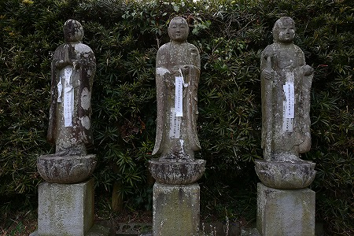
寺の入り口に立つ六地蔵。
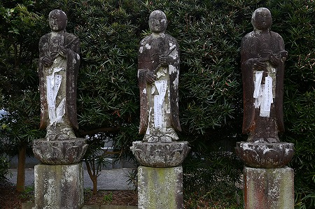
すでに札が貼られています。
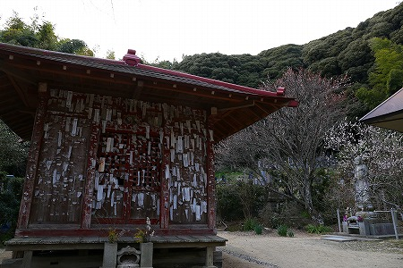
階段を登ると、本堂の左手に赤いお堂がある。
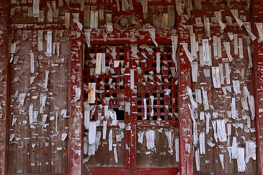
その正面にびっしりと札が貼られている。
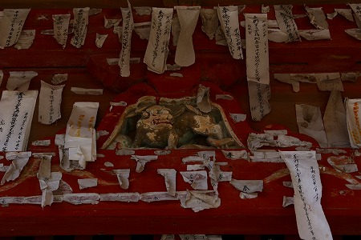
一枚一枚に戒名が書かれている。
死者の分だけ札が奉納されているのだ。
そう思うと、鬼気迫る光景だ。
香取市阿玉川の観音堂。
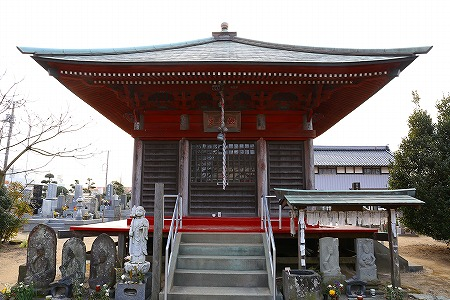
墓地の中にある小さな観音堂。
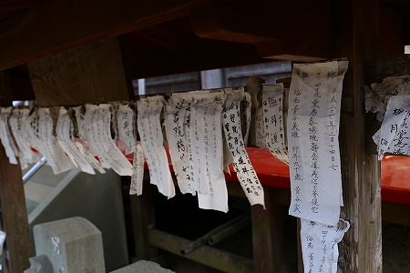
ここにも札が奉納されている。
ココでは観音堂本体には貼らず、ふたつの石像にかかった屋根に貼られている。
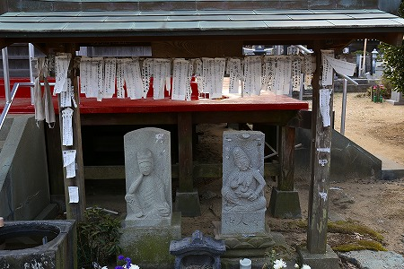
屋根の下には如意輪観音と慈母観音の石像がある。
慈母観音の方は授乳している珍しいタイプの像だった。
それにしても何から何まで謎だらけな習俗だ。
民俗学者や郷土史家だったら、その意味、歴史、信仰圏などを事細かく調べるのだろう。
私ももっと詳しく知りたいと思う反面、これ以上知りたくない、という気持ちもある。
「千葉の片隅では戒名が書かれた札があっちこっちに奉納されている」
…この事実だけで充分美しくないですか？
勿論、この習俗を研究対象として調査されている人もいるかも知れないし、これから調査する人がいるのかも知れないけど、それはそれとしてこの習俗のダイナミズムはそこにはないような気がする。
なので敢えてあれこれ詮索せずに、この札がゆらゆら風にたなびいている様をぼんやりと眺めていたい、と思う今日この頃なのです。
2014.09,2015.01,03.
珍寺大道場 HOME